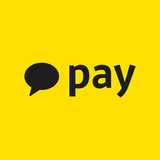
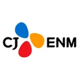
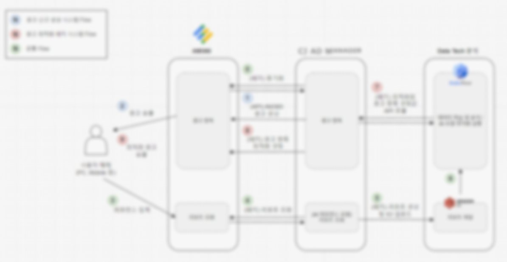
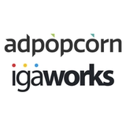
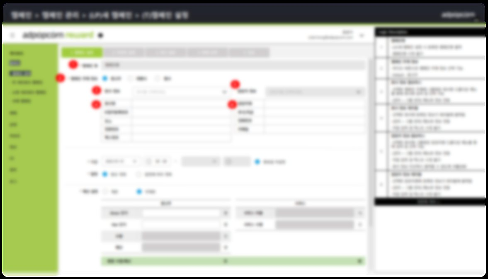
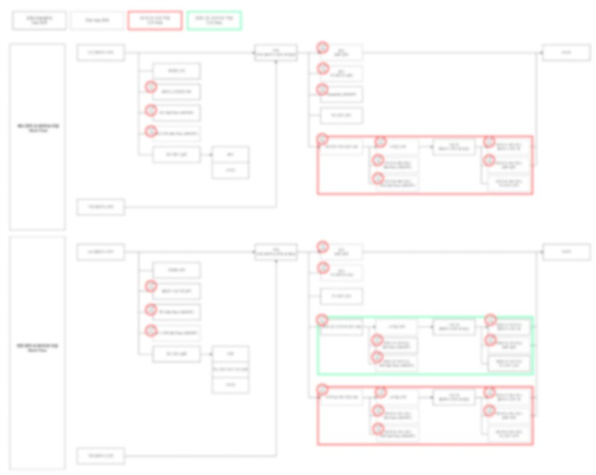
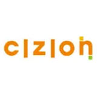
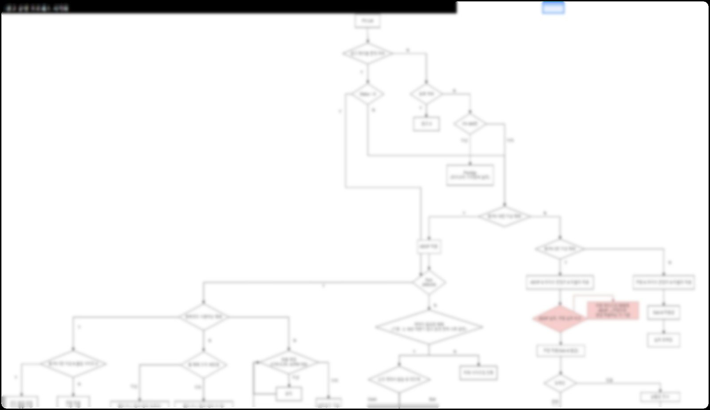
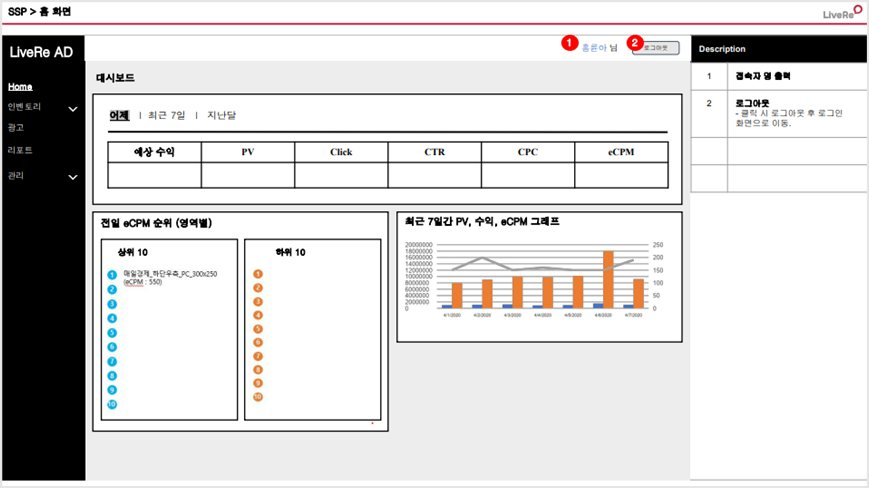

01
광고 생태계 이해 (Supply · Demand)
매체 수익화(SSP 미디에이션), 광고 집행(AE), 애드서버 기획까지 공급·수요 양쪽 실무 경험을 바탕으로 Ad Tech 도메인에 대한 이해도 보유
이 페이지는 Claude와 함께 기획(PRD)부터 디자인·구현까지 진행했습니다.
Platform PM · Ad Tech · Targeting
플랫폼 PM · 카카오페이 타겟팅 플랫폼 · 경력 7년
광고 네트워크 및 배너 운영·영업·정산 현장에서 출발해, 지금은 타겟팅 플랫폼을 담당하고 있는 플랫폼 PM입니다.
쓰는 사람의 실수가 최대한 일어나지 않도록 정책과 안전장치부터 설계하고, 판단의 근거는 직접 데이터를 분석해 만듭니다.
최근에는 AI 도구를 적극 활용해 기획 속도를 높이고 있습니다.
01
매체 수익화(SSP 미디에이션), 광고 집행(AE), 애드서버 기획까지 공급·수요 양쪽 실무 경험을 바탕으로 Ad Tech 도메인에 대한 이해도 보유
02
오퍼월 광고 플랫폼 개편, SSP 서빙 기능, 자체 SSP MVP 등 광고 플랫폼 기획·출시
03
약 5만 개 타겟조건으로 구성된 셀프서브 빌더 기획·운영, 레거시 플랫폼에서 전환될 수 있는 환경 마련
04
RAG+LLM 에이전트 기반 타겟조건 탐색·추천 기능 기획, AI 기반 CTR·VTR 최적화 광고 상품 출시

담당타겟팅 빌더 (Audience_list 부문) · CXM (타겟 세그먼트 플랫폼) · 실시간 타겟팅 플랫폼 · CMS

방송·디지털 광고 솔루션 (SSP, 비디오 광고)
담당비디오 · DA 광고


모바일 매체 수익화 (SSP, 리워드 광고·오퍼월)
담당리워드 광고 플랫폼 · SSP



소셜 댓글 솔루션 '라이브리', SNS 콘텐츠 큐레이팅 '어트랙트'
담당광고 네트워크 사업 전반 (영업 · 기획 · 운영 · 정산 · CS)


애드팝콘
애드팝콘
애드팝콘
애드팝콘
애드팝콘
시지온
시지온
시지온
시지온